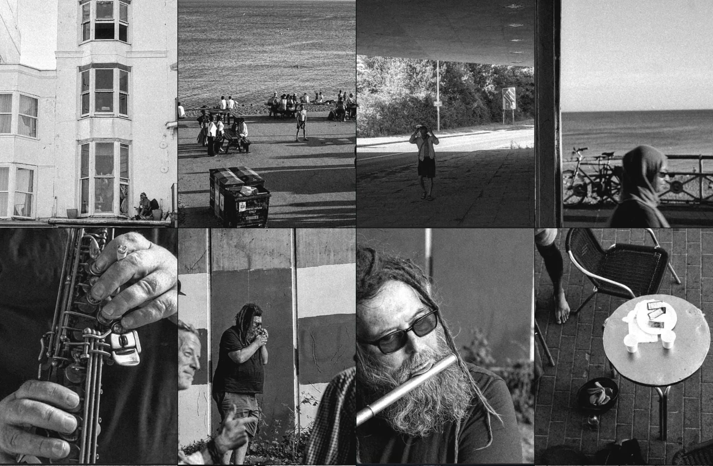
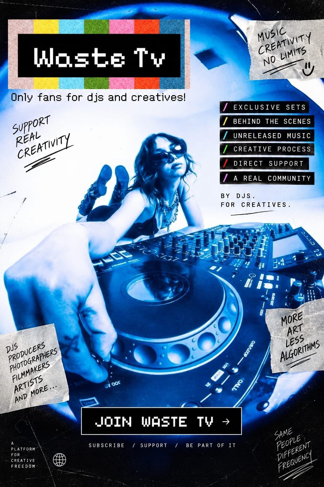

shaon.archive
Artist · Creative Director · Photographer · Concept Shoots
A collection of moments caught in passing: the south coast, its people, and the ordinary made strange. Available for shoots, concepts and collaborations.
WasteTV
Creative direction, filming and edit for WasteTV, a new platform built by DJs, for creatives. Launch campaign plus ongoing episodes.

85mm: On a Saturday, a WasteTV episode following a day out with the crew.
After Hours, a kaleidoscope night edit for WasteTV.
Film
Questions, a short concept piece shot along the Brighton seafront.
A Windy Day in Brighton, shot on VHS.
A Day at the Gallery, watching video art on an old CRT.
Selected Work
Loading photos…
About
shaon is an artist, creative director and photographer working across street photography, concept shoots and short film. The work is an ongoing record of streets, coastlines and the people passing through them, shot on whatever camera is at hand, in colour and in black and white. Mostly Brighton. Mostly unplanned. Open to shoots, creative direction and collaborations.
Contact
For shoots, concepts, collaborations or prints, reach out on Instagram or by email.